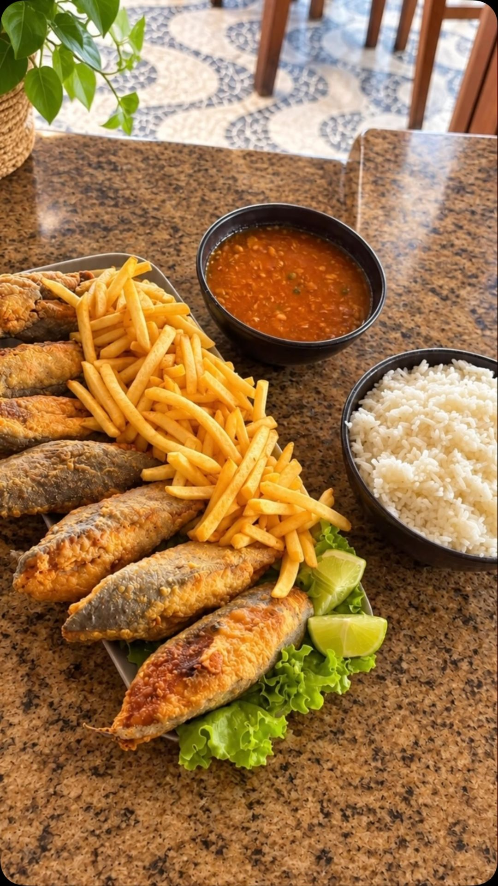
Peixes e frutos do mar
Peixe frito completo, moqueca de robalo, bobó e camarão no coco. Pratos fartos, que servem de 2 a 3 pessoas.
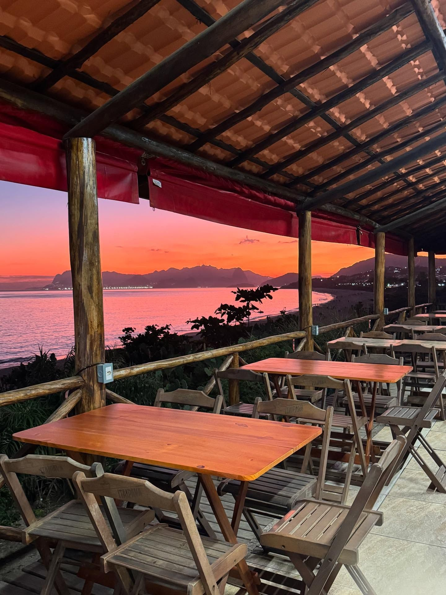
Praia de Camboinhas · Niterói · desde 1982
Pé na areia, peixe fresco, drinks gelados e o pôr do sol mais bonito de Niterói. Há mais de 40 anos o Quiosque Tia Lúcia é o cantinho especial de quem ama Camboinhas.
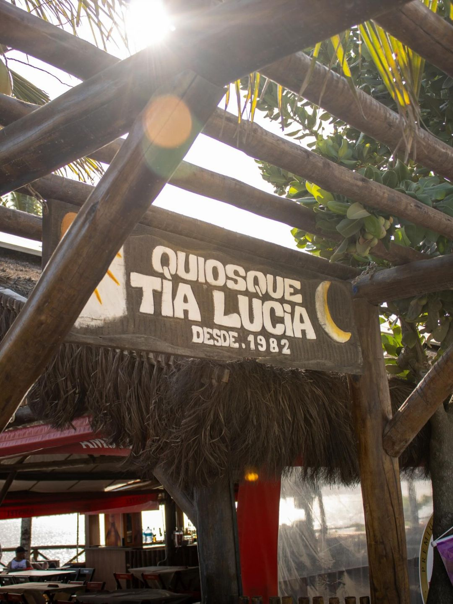
Nossa história
O que começou como um quiosque de praia virou ponto de encontro de famílias, amigos e casais em Camboinhas. A receita continua a mesma: comida farta, atendimento de casa e uma vista que não se cansa de surpreender.
Especialidades da casa

Peixe frito completo, moqueca de robalo, bobó e camarão no coco. Pratos fartos, que servem de 2 a 3 pessoas.
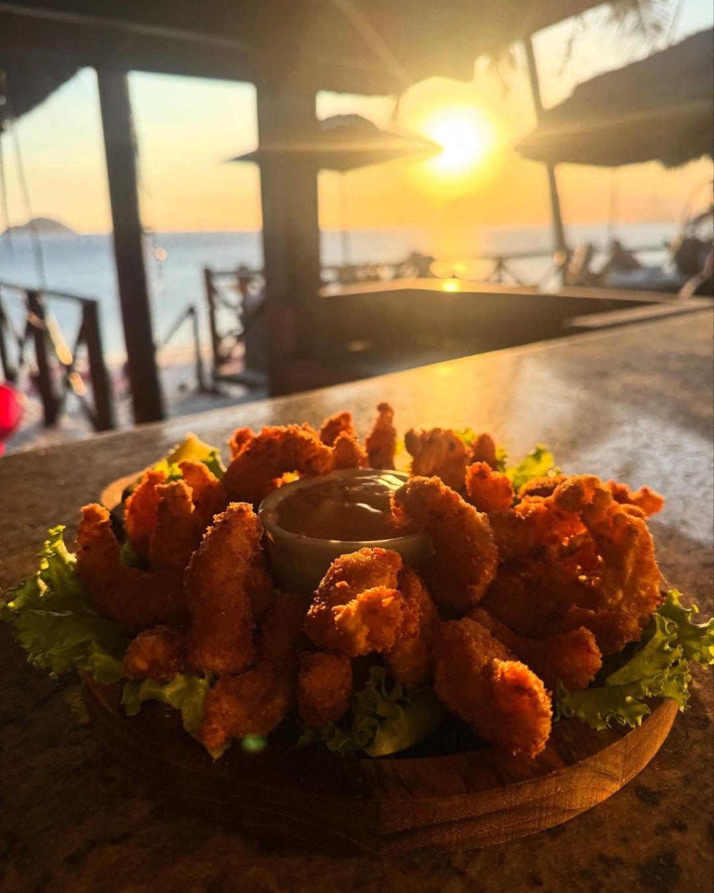
Camarão empanado, bolinho de bacalhau, lula à dorê, pastéis e o famoso gurjão de peixe para dividir.
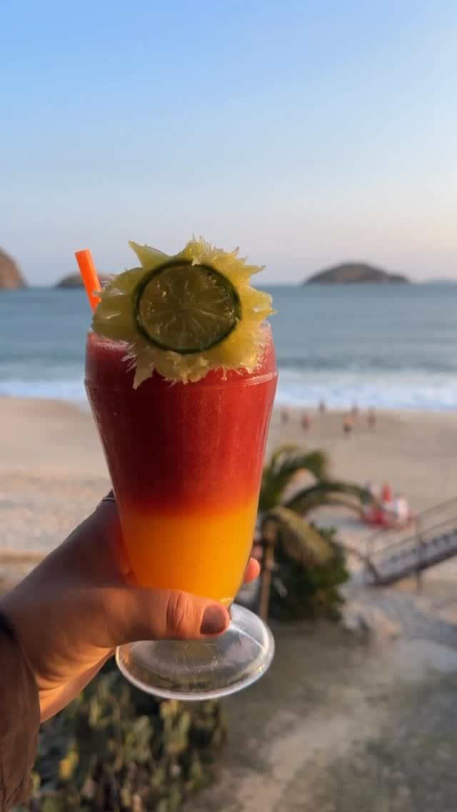
Drinks da casa, cerveja trincando e coco gelado para acompanhar o pôr do sol na areia.
Novidade · a partir de 29/11
Buffet livre com mais de 30 opções, música ao vivo com saxofone e o mar de Camboinhas na sua frente. Em parceria com a Nina Gourmet.
R$ 54,90 por pessoa · buffet livre
As reservas do café da manhã são feitas com a Nina Gourmet.
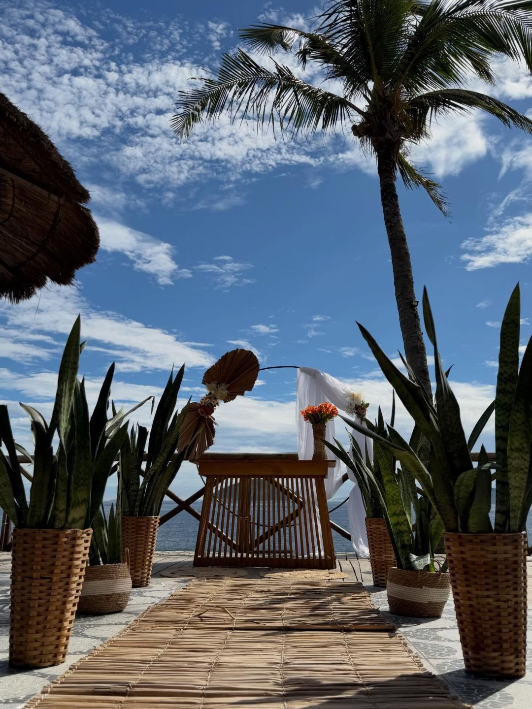
Casamentos · aniversários · eventos
Do chá revelação ao casamento ao pôr do sol: estrutura, buffet e decoração em um deck de frente para a praia.
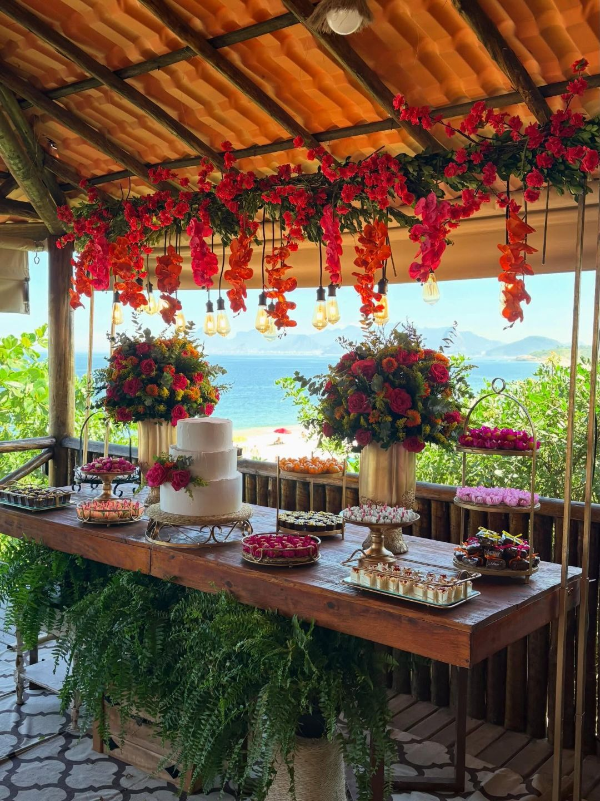
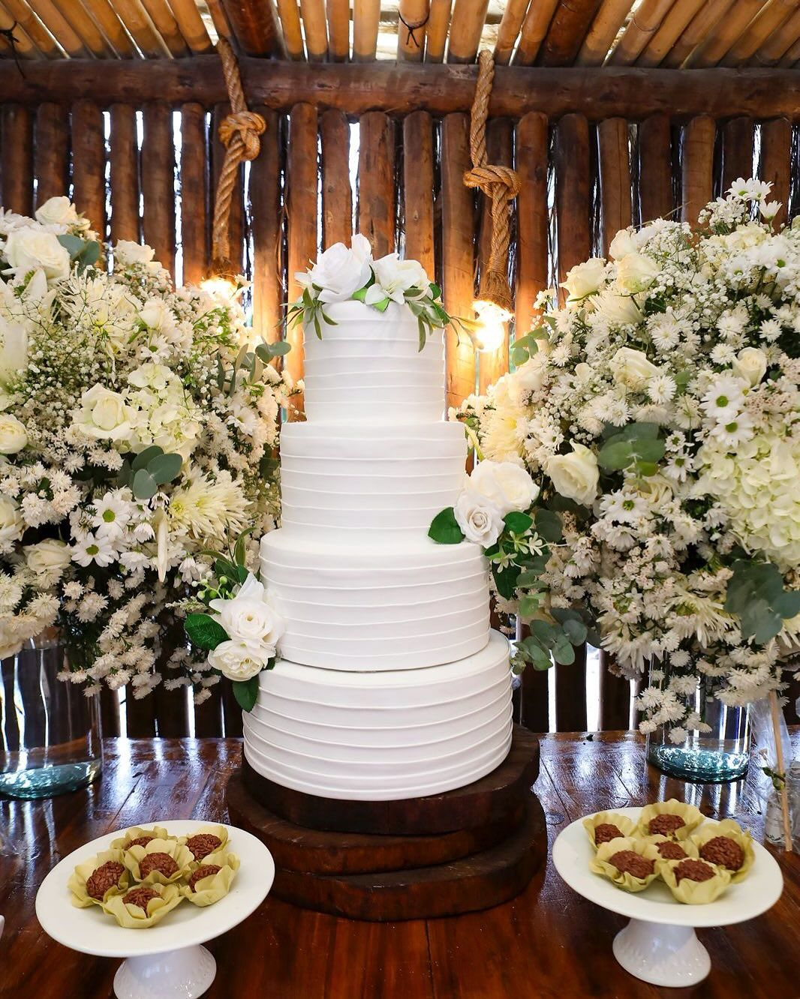
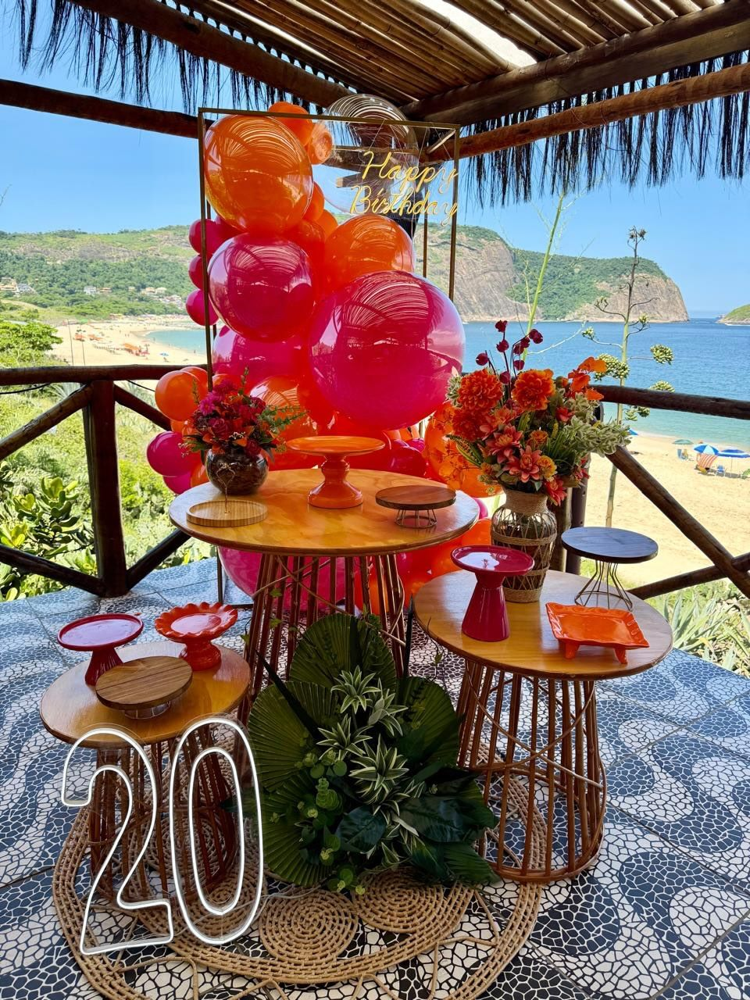
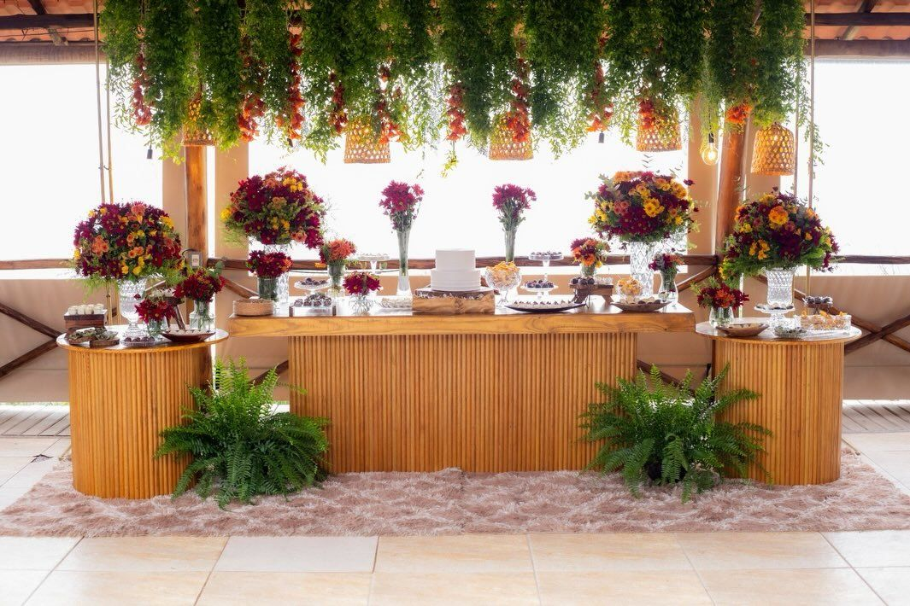
O espaço
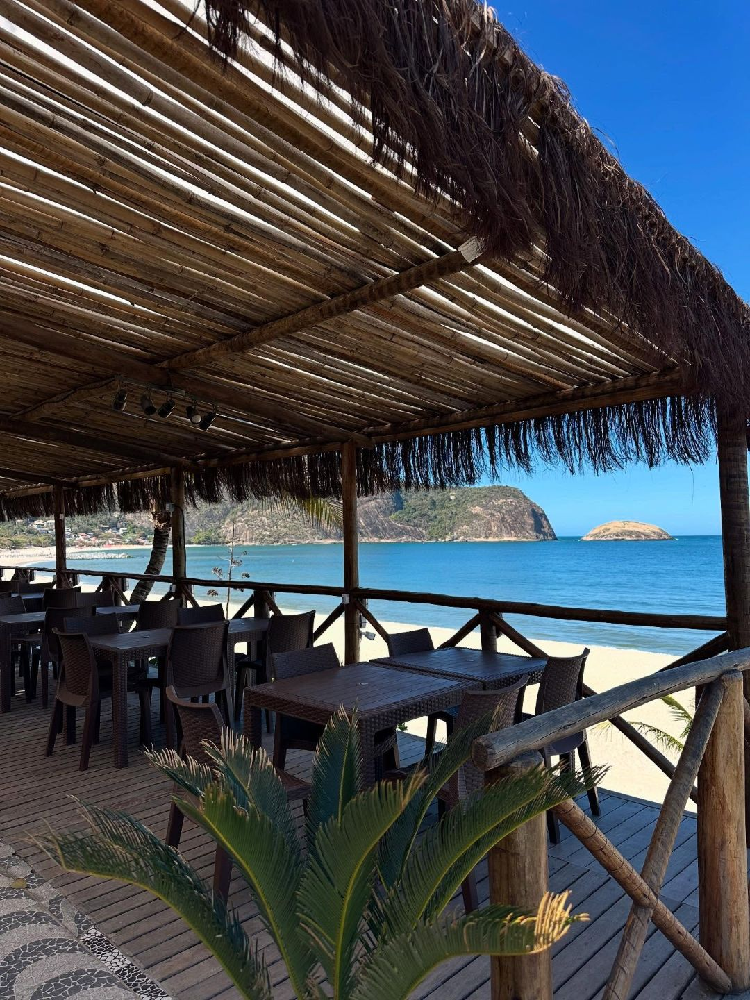
Mesas na sombra, de frente para o mar e para a Ilha do Pai e da Mãe.
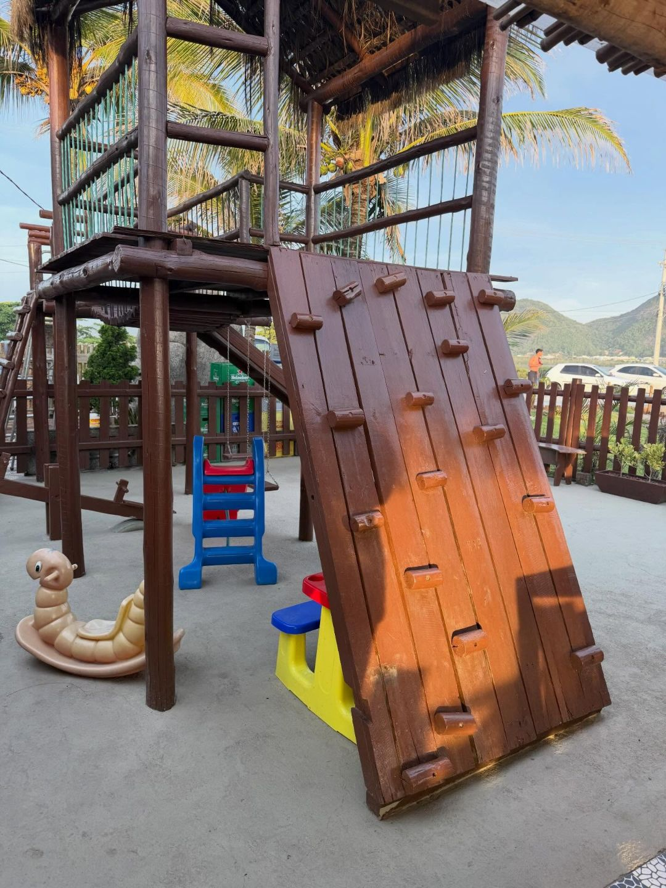
Brinquedos de madeira para a criançada enquanto os adultos aproveitam.
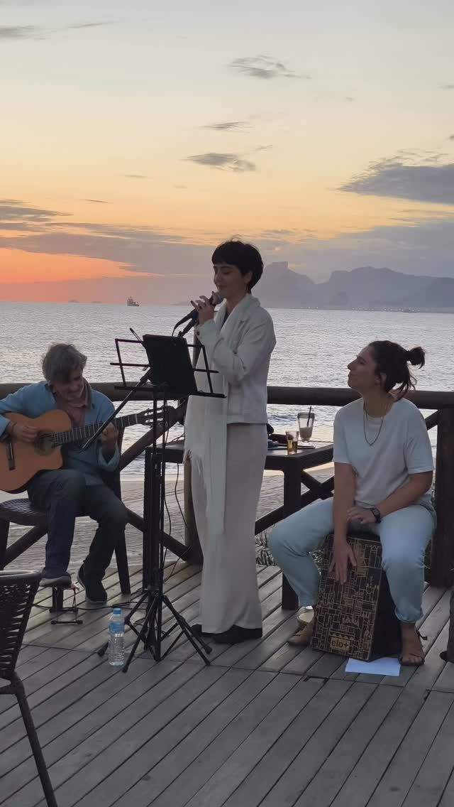
Shows em datas especiais e nos fins de semana de temporada. Acompanhe a agenda no Instagram.
O dia termina aqui. E sempre termina bonito.
Reserve pelo WhatsApp e garanta a melhor mesa para o fim de tarde.
Cardápio
Os pratos servem de 2 a 3 pessoas. Busque pelo nome ou filtre por categoria.
Como chegar
HorárioTodos os dias, das 8h às 19h
Café da manhã: sábados e domingos, 8h às 11h
Telefone e WhatsApp(21) 99537-8586
Instagram@quiosque_tialucia
Te esperamos na areia
Almoço em família, aniversário com os amigos ou aquele fim de tarde a dois. Chama a gente no WhatsApp.